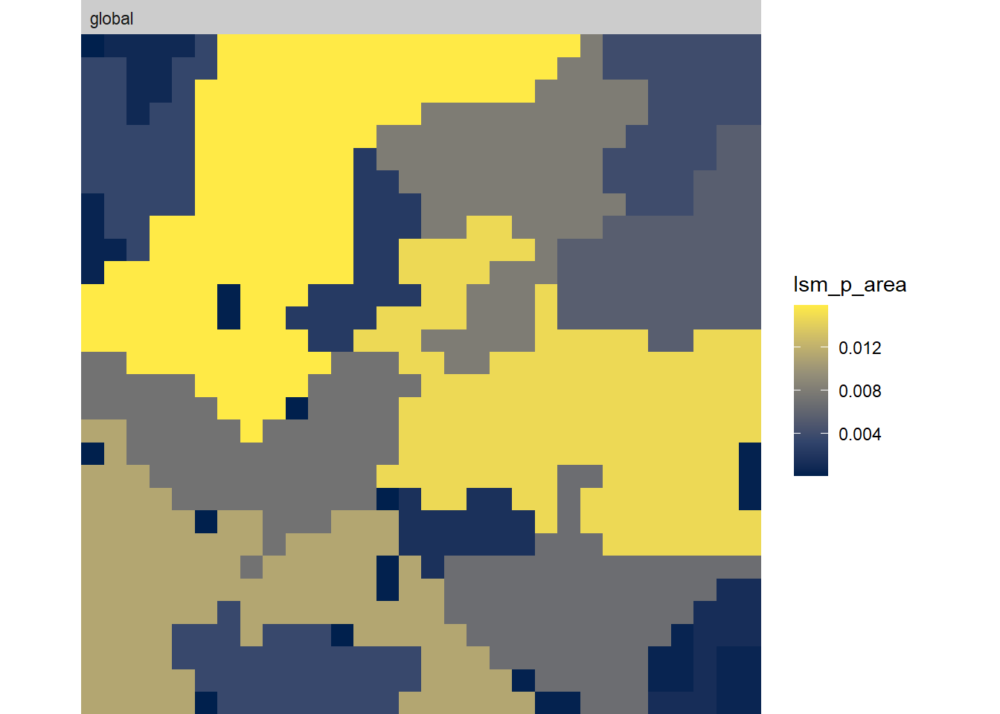

3 Using patch-level metrics
All of the metrics in the landscapemetrics package follow a similar syntax. They all start with lsm_'. The letter after the underscore (_) denotes whether it is a patch-levelp, class-levelcor landscape-levell` metric. The letters after the second underscore are the abbreviation for that metric.
So the code below is a patch level metric for Euclidean nearest-neighbour distance. Type the code out and you will get a large table that shows, for each patch on the landscape, what the Euclidean nearest neighbour distance is to a patch of the same class. To get a detailed description of any metric, simply type help(<function_name>), so for this metric, you would type help(lsm_p_enn).
Let’s run a few more patch-level metrics, just to see what they do.
Read the help documentation on the following commands (so you understand what the metric is measuring) and then run the code, using the example for enn above.
lsm_p_contig
lsm_p_frac
lsm_p_para
Next, to illustrate how the neighbour rule affects the metrics, try running the area metric, first with the default (8 neighbour rule), then with the 4 neighbour rule.
All this is fine, but what if you want to visualize the metrics back on the map? Let’s run the Core Area Index (cai) metric, which calculates the percentage of each patch that is core area. A pixel is defined as core if the cell has no neighbour that is different than itself (using 4-neighbour rule).

The first line of code above give you a table with a line for each patch, and the core area (as a percent) as the value. The second line creates 3 plots that map landcovers 1, 2 and 3, showing the core area highlighted in orange and the edges in grey.
Finally, you can create a map where the patches are colour coded by the value of the metric. Let’s do it for area.
## $layer_1
You can play with making different maps by substituting in a different metric function within the quote marks afterwhat =.
Now we can move on to class level metrics.